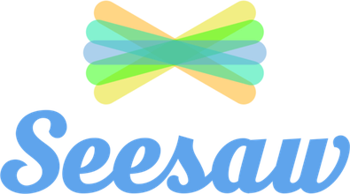
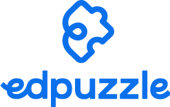
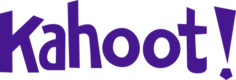
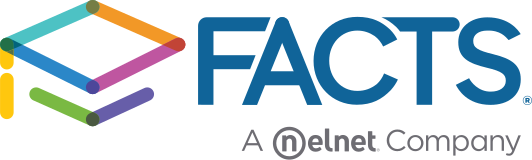
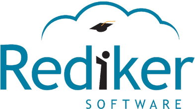
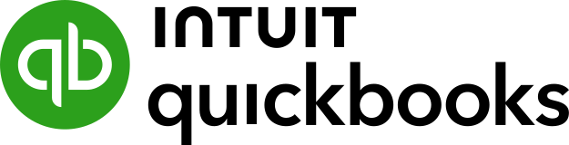

Google Classroom
Assignments stay in Classroom. ANNASIS already connects to the Google Workspace behind it.
ANNASIS runs alongside the software your school already uses. Faculty keep their favorite LMS. The business office keeps QuickBooks. Students keep signing in through Clever or ClassLink where you have them. And ANNASIS can sit beside the SIS you run today — taking on tuition & billing, fundraising, event registration, the school store, and athletics eligibility — until the office is ready for more.
No forced switch, no big-bang cutover. Start with the modules that close today’s gaps and grow from there.
ANNASIS is not asking Faculty to give up a classroom tool they love. The LMS keeps coursework and assignments; ANNASIS runs the office side of the school — enrollment, billing, events, the store, forms, and Parent communication — so each tool does the job it is best at.
Assignments stay in Classroom. ANNASIS already connects to the Google Workspace behind it.
A favorite in upper schools. Canvas keeps the coursework; ANNASIS keeps the office running.
Schoology classes stay put while ANNASIS handles admissions, tuition, and family communication.
Teams for Education stays the classroom hub. ANNASIS connects to the Microsoft 365 tenant behind it.
Many schools use Clever or ClassLink to give Students and Faculty one-click sign-on to classroom apps. Where a hub is already in place, it keeps working beside ANNASIS. These hubs are optional — plenty of private schools run without them, and we never assume you have one.
Single sign-on and rostering for classroom apps. Optional at many private schools.
LaunchPad sign-on and Roster Server. Optional — confirm what your campus licenses.
Lesson planning for Faculty. Planbook’s automated rostering runs through ClassLink, so it is worth confirming if you rely on it.

Seesaw
Edpuzzle
Kahoot!Classroom favorites like these are commonly rostered through Clever or ClassLink, so Students sign in the way they already do.
ANNASIS can sit beside the student information system you run today and turn on the Power-ups your current system leaves to spreadsheets and side tools: event registration, the school store, athletics eligibility, forms and approvals, and uniform exchange. When the office is ready for a fuller move, we plan the handoff together — on your timeline.

FACTS / RenWeb
RedikerOneRoster is the common standard many SIS packages use to share student, Faculty, and class rosters. ANNASIS supports OneRoster today — standards-based roster sharing so classes and enrollments flow cleanly to your LMS and sign-on tools, directly from the SIS or through Clever or ClassLink. We confirm the path with each school’s vendors during onboarding.
Logos and product names identify software private schools commonly run alongside ANNASIS. They belong to their owners and are not partnership, certification, or endorsement claims.
These connections are live in ANNASIS now. Your books, your email domain, and your accounts stay where they are — ANNASIS works with them instead of replacing them.

Keep QuickBooks as your books of record. ANNASIS posts school operations to QuickBooks Online automatically, with a file export for offices on QuickBooks Desktop.
ANNASIS connects to your school’s Google Workspace, so school email and communication stay on the domain and accounts you already manage.
Running on Microsoft? ANNASIS connects to Microsoft 365 the same way — your tenant, your domain, your accounts.
Share your SIS, your LMS, and whether Clever or ClassLink is in place. We will show you where ANNASIS fits beside them — and which modules to turn on first.